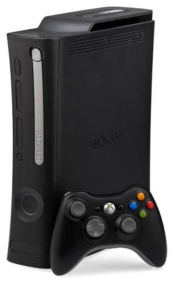
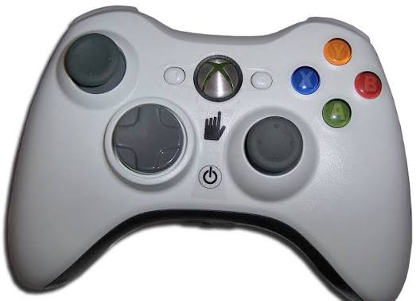

Xbox 360 Overview
The Xbox 360 launched in North America on November 22, 2005. This generation helped make online gaming, achievements, party chat, downloadable games, and digital media more common for console players.
Reference: Microsoft News: Xbox 360 Launch Lineup
Xbox Live and Achievements
Xbox 360 made Xbox Live a major part of gaming. Players could compete online, earn achievements, build a gamerscore, download games, and connect with friends.

Popular Xbox 360 Games
Popular Xbox 360 games included Halo 3, Gears of War, Forza Motorsport, Fable II, Minecraft Xbox 360 Edition, and Call of Duty games. This console was known for multiplayer gaming and a strong game library.
Reference: Xbox 360 Controller Support
